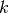
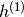
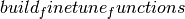

Deep Belief Networks¶
Note
This section assumes the reader has already read through Classifying MNIST digits using Logistic Regression and Multilayer Perceptron and Restricted Boltzmann Machines (RBM). Additionally it uses the following Theano functions and concepts : T.tanh, shared variables, basic arithmetic ops, T.grad, Random numbers, floatX. If you intend to run the code on GPU also read GPU.
Note
The code for this section is available for download here.
Deep Belief Networks¶
[Hinton06] showed that RBMs can be stacked and trained in a greedy manner
to form so-called Deep Belief Networks (DBN). DBNs are graphical models which
learn to extract a deep hierarchical representation of the training data.
They model the joint distribution between observed vector  and
the
and
the  hidden layers as follows:
hidden layers as follows:
(1)
where , is a conditional distribution for the visible units conditioned on the hidden units of the RBM at level , and is the visible-hidden joint distribution in the top-level RBM. This is illustrated in the figure below.
The principle of greedy layer-wise unsupervised training can be applied to DBNs with RBMs as the building blocks for each layer [Hinton06], [Bengio07]. The process is as follows:
1. Train the first layer as an RBM that models the raw input as its visible layer.
2. Use that first layer to obtain a representation of the input that will be used as data for the second layer. Two common solutions exist. This representation can be chosen as being the mean activations or samples of .
3. Train the second layer as an RBM, taking the transformed data (samples or mean activations) as training examples (for the visible layer of that RBM).
4. Iterate (2 and 3) for the desired number of layers, each time propagating upward either samples or mean values.
5. Fine-tune all the parameters of this deep architecture with respect to a proxy for the DBN log- likelihood, or with respect to a supervised training criterion (after adding extra learning machinery to convert the learned representation into supervised predictions, e.g. a linear classifier).
In this tutorial, we focus on fine-tuning via supervised gradient descent.
Specifically, we use a logistic regression classifier to classify the input
based on the output of the last hidden layer of the
DBN. Fine-tuning is then performed via supervised gradient descent of the
negative log-likelihood cost function. Since the supervised gradient is only
non-null for the weights and hidden layer biases of each layer (i.e. null for
the visible biases of each RBM), this procedure is equivalent to initializing
the parameters of a deep MLP with the weights and hidden layer biases obtained
with the unsupervised training strategy.
Justifying Greedy-Layer Wise Pre-Training¶
Why does such an algorithm work ? Taking as example a 2-layer DBN with hidden
layers  and  (with respective weight parameters
and ), [Hinton06] established
(see also Bengio09]_ for a detailed derivation) that can be rewritten as,
(with respective weight parameters
and ), [Hinton06] established
(see also Bengio09]_ for a detailed derivation) that can be rewritten as,
(2)
represents the KL divergence between the posterior of the first RBM if it were standalone, and the probability for the same layer but defined by the entire DBN (i.e. taking into account the prior defined by the top-level RBM). is the entropy of the distribution .
It can be shown that if we initialize both hidden layers such that
 , and the KL
divergence term is null. If we learn the first level RBM and then keep its
parameters fixed, optimizing Eq. (2) with respect
to can thus only increase the likelihood
, and the KL
divergence term is null. If we learn the first level RBM and then keep its
parameters fixed, optimizing Eq. (2) with respect
to can thus only increase the likelihood  .
.
Also, notice that if we isolate the terms which depend only on , we get:

Optimizing this with respect to amounts to training a second-stage
RBM, using the output of as the training distribution,
when is sampled from the training distribution for the first RBM.
Implementation¶
To implement DBNs in Theano, we will use the class defined in the Restricted Boltzmann Machines (RBM) tutorial. One can also observe that the code for the DBN is very similar with the one for SdA, because both involve the principle of unsupervised layer-wise pre-training followed by supervised fine-tuning as a deep MLP. The main difference is that we use the RBM class instead of the dA class.
We start off by defining the DBN class which will store the layers of the MLP, along with their associated RBMs. Since we take the viewpoint of using the RBMs to initialize an MLP, the code will reflect this by seperating as much as possible the RBMs used to initialize the network and the MLP used for classification.
class DBN(object):
def __init__(self, numpy_rng, theano_rng = None, n_ins = 784,
hidden_layers_sizes=[500,500], n_outs = 10):
"""This class is made to support a variable number of layers.
:type numpy_rng: numpy.random.RandomState
:param numpy_rng: numpy random number generator used to draw initial
weights
:type theano_rng: theano.tensor.shared_randomstreams.RandomStreams
:param theano_rng: Theano random generator; if None is given one is
generated based on a seed drawn from `rng`
:type n_ins: int
:param n_ins: dimension of the input to the DBN
:type n_layers_sizes: list of ints
:param n_layers_sizes: intermediate layers size, must contain
at least one value
:type n_outs: int
:param n_outs: dimension of the output of the network
"""
self.sigmoid_layers = []
self.rbm_layers = []
self.params = []
self.n_layers = len(hidden_layers_sizes)
assert self.n_layers > 0
if not theano_rng:
theano_rng = RandomStreams(numpy_rng.randint(2**30))
# allocate symbolic variables for the data
self.x = T.matrix('x') # the data is presented as rasterized images
self.y = T.ivector('y') # the labels are presented as 1D vector of
# [int] labels
self.sigmoid_layers will store the feed-forward graphs which together form the MLP, while self.rbm_layers will store the RBMs used to pretrain each layer of the MLP.
Next step, we construct n_layers sigmoid layers (we use the SigmoidalLayer class introduced in Multilayer Perceptron, with the only modification that we replaced the non-linearity from tanh to the logistic function ) and n_layers RBMs, where n_layers is the depth of our model. We link the sigmoid layers such that they form an MLP, and construct each RBM such that they share the weight matrix and the hidden bias with its corresponding sigmoid layer.
for i in xrange( self.n_layers ):
# construct the sigmoidal layer
# the size of the input is either the number of hidden units of the layer below or
# the input size if we are on the first layer
if i == 0 :
input_size = n_ins
else:
input_size = hidden_layers_sizes[i-1]
# the input to this layer is either the activation of the hidden layer below or the
# input of the DBN if you are on the first layer
if i == 0 :
layer_input = self.x
else:
layer_input = self.sigmoid_layers[-1].output
sigmoid_layer = HiddenLayer(rng = numpy_rng,
input = layer_input,
n_in = input_size,
n_out = hidden_layers_sizes[i],
activation = T.nnet.sigmoid)
# add the layer to our list of layers
self.sigmoid_layers.append(sigmoid_layer)
# its arguably a philosophical question... but we are going to only declare that
# the parameters of the sigmoid_layers are parameters of the DBN. The visible
# biases in the RBM are parameters of those RBMs, but not of the DBN.
self.params.extend(sigmoid_layer.params)
# Construct an RBM that shared weights with this layer
rbm_layer = RBM(numpy_rng = numpy_rng, theano_rng = theano_rng,
input = layer_input,
n_visible = input_size,
n_hidden = hidden_layers_sizes[i],
W = sigmoid_layer.W,
hbias = sigmoid_layer.b)
self.rbm_layers.append(rbm_layer)
All that is left is to stack one last logistic regression layer in order to form an MLP. We will use the LogisticRegression class introduced in Classifying MNIST digits using Logistic Regression.
# We now need to add a logistic layer on top of the MLP
self.logLayer = LogisticRegression(\
input = self.sigmoid_layers[-1].output,\
n_in = hidden_layers_sizes[-1], n_out = n_outs)
self.params.extend(self.logLayer.params)
# construct a function that implements one step of fine-tuning compute the cost for
# second phase of training, defined as the negative log likelihood
# of the logistic regression (output) layer
self.finetune_cost = self.logLayer.negative_log_likelihood(self.y)
# compute the gradients with respect to the model parameters
# symbolic variable that points to the number of errors made on the
# minibatch given by self.x and self.y
self.errors = self.logLayer.errors(self.y)
The class also provides a method which generates training functions for each
of the RBMs. They are returned as a list, where element  is a
function which implements one step of training for the RBM at layer
.
is a
function which implements one step of training for the RBM at layer
.
def pretraining_functions(self, train_set_x, batch_size, k):
''' Generates a list of functions, for performing one step of gradient descent at a
given layer. The function will require as input the minibatch index, and to train an
RBM you just need to iterate, calling the corresponding function on all minibatch
indexes.
:type train_set_x: theano.tensor.TensorType
:param train_set_x: Shared var. that contains all datapoints used for training the RBM
:type batch_size: int
:param batch_size: size of a [mini]batch
:param k: number of Gibbs steps to do in CD-k / PCD-k
'''
# index to a [mini]batch
index = T.lscalar('index') # index to a minibatch
In order to be able to change the learning rate during training, we associate a Theano variable to it that has a default value.
learning_rate = T.scalar('lr') # learning rate to use
# number of batches
n_batches = train_set_x.get_value(borrow=True).shape[0] / batch_size
# begining of a batch, given `index`
batch_begin = index * batch_size
# ending of a batch given `index`
batch_end = batch_begin+batch_size
pretrain_fns = []
for rbm in self.rbm_layers:
# get the cost and the updates list
# using CD-k here (persisent=None) for training each RBM.
# TODO: change cost function to reconstruction error
cost,updates = rbm.cd(learning_rate, persistent=None, k)
# compile the Theano function; check if k is also a Theano
# variable, if so added to the inputs of the function
if isinstance(k, theano.Variable):
inputs = [ index, theano.Param(learning_rate, default=0.1),k]
else:
inputs = [ index, theano.Param(learning_rate, default=0.1)]
fn = theano.function(inputs = inputs,
outputs = cost,
updates = updates,
givens = {self.x :train_set_x[batch_begin:batch_end]})
# append `fn` to the list of functions
pretrain_fns.append(fn)
return pretrain_fns
Now any function pretrain_fns[i] takes as arguments index and optionally lr – the learning rate. Note that the names of the parameters are the names given to the Theano variables (e.g. lr) when they are constructed and not the name of the python variables (e.g. learning_rate). Keep this in mind when working with Theano. Optionally, if you provide k (the number of Gibbs steps to perform in CD or PCD) this will also become an argument of your function.
In the same fashion, the DBN class includes a method for building the functions required for finetuning ( a train_model, a validate_model and a test_model function).
def build_finetune_functions(self, datasets, batch_size, learning_rate):
'''Generates a function `train` that implements one step of finetuning, a function
`validate` that computes the error on a batch from the validation set, and a function
`test` that computes the error on a batch from the testing set
:type datasets: list of pairs of theano.tensor.TensorType
:param datasets: It is a list that contain all the datasets; the has to contain three
pairs, `train`, `valid`, `test` in this order, where each pair is formed of two Theano
variables, one for the datapoints, the other for the labels
:type batch_size: int
:param batch_size: size of a minibatch
:type learning_rate: float
:param learning_rate: learning rate used during finetune stage
'''
(train_set_x, train_set_y) = datasets[0]
(valid_set_x, valid_set_y) = datasets[1]
(test_set_x , test_set_y ) = datasets[2]
# compute number of minibatches for training, validation and testing
n_valid_batches = valid_set_x.get_value(borrow=True).shape[0] / batch_size
n_test_batches = test_set_x.get_value(borrow=True).shape[0] / batch_size
index = T.lscalar('index') # index to a [mini]batch
# compute the gradients with respect to the model parameters
gparams = T.grad(self.finetune_cost, self.params)
# compute list of fine-tuning updates
updates = {}
for param, gparam in zip(self.params, gparams):
updates[param] = param - gparam*learning_rate
train_fn = theano.function(inputs = [index],
outputs = self.finetune_cost,
updates = updates,
givens = {
self.x : train_set_x[index*batch_size:(index+1)*batch_size],
self.y : train_set_y[index*batch_size:(index+1)*batch_size]})
test_score_i = theano.function([index], self.errors,
givens = {
self.x: test_set_x[index*batch_size:(index+1)*batch_size],
self.y: test_set_y[index*batch_size:(index+1)*batch_size]})
valid_score_i = theano.function([index], self.errors,
givens = {
self.x: valid_set_x[index*batch_size:(index+1)*batch_size],
self.y: valid_set_y[index*batch_size:(index+1)*batch_size]})
# Create a function that scans the entire validation set
def valid_score():
return [valid_score_i(i) for i in xrange(n_valid_batches)]
# Create a function that scans the entire test set
def test_score():
return [test_score_i(i) for i in xrange(n_test_batches)]
return train_fn, valid_score, test_score
Note that the returned valid_score and test_score are not Theano functions, but rather Python functions. These loop over the entire validation set and the entire test set to produce a list of the losses obtained over these sets.
Putting it all together¶
The few lines of code below constructs the deep belief network :
numpy_rng = numpy.random.RandomState(123)
print '... building the model'
# construct the Deep Belief Network
dbn = DBN(numpy_rng = numpy_rng, n_ins = 28*28,
hidden_layers_sizes = [1000,1000,1000],
n_outs = 10)
There are two stages in training this network: (1) a layer-wise pre-training and (2) a fine-tuning stage.
For the pre-training stage, we loop over all the layers of the network. For each layer, we use the compiled theano function which determines the input to the i-th level RBM and performs one step of CD-k within this RBM. This function is applied to the training set for a fixed number of epochs given by pretraining_epochs.
#########################
# PRETRAINING THE MODEL #
#########################
print '... getting the pretraining functions'
# We are using CD-1 here
pretraining_fns = dbn.pretraining_functions(
train_set_x = train_set_x,
batch_size = batch_size,
k = k)
print '... pre-training the model'
start_time = time.clock()
## Pre-train layer-wise
for i in xrange(dbn.n_layers):
# go through pretraining epochs
for epoch in xrange(pretraining_epochs):
# go through the training set
c = []
for batch_index in xrange(n_train_batches):
c.append(pretraining_fns[i](index = batch_index,
lr = pretrain_lr ) )
print 'Pre-training layer %i, epoch %d, cost '%(i,epoch),numpy.mean(c)
end_time = time.clock()
The fine-tuning loop is very similar to the one in the Multilayer Perceptron tutorial, the only difference being that we now use the functions given by .
Running the Code¶
The user can run the code by calling:
python code/DBN.py
With the default parameters, the code runs for 100 pre-training epochs with mini-batches of size 10. This corresponds to performing 500,000 unsupervised parameter updates. We use an unsupervised learning rate of 0.01, with a supervised learning rate of 0.1. The DBN itself consists of three hidden layers with 1000 units per layer. With early-stopping, this configuration achieved a minimal validation error of 1.27 with corresponding test error of 1.34 after 46 supervised epochs.
On an Intel(R) Xeon(R) CPU X5560 running at 2.80GHz, using a multi-threaded MKL library (running on 4 cores), pretraining took 615 minutes with an average of 2.05 mins/(layer * epoch). Fine-tuning took only 101 minutes or approximately 2.20 mins/epoch.
Hyper-parameters were selected by optimizing on the validation error. We tested unsupervised learning rates in and supervised learning rates in . We did not use any form of regularization besides early-stopping, nor did we optimize over the number of pretraining updates.
Tips and Tricks¶
One way to improve the running time of your code (given that you have sufficient memory available), is to compute the representation of the entire dataset at layer i in a single pass, once the weights of the -th layers have been fixed. Namely, start by training your first layer RBM. Once it is trained, you can compute the hidden units values for every example in the dataset and store this as a new dataset which is used to train the 2nd layer RBM. Once you trained the RBM for layer 2, you compute, in a similar fashion, the dataset for layer 3 and so on. This avoids calculating the intermediate (hidden layer) representations, pretraining_epochs times at the expense of increased memory usage.